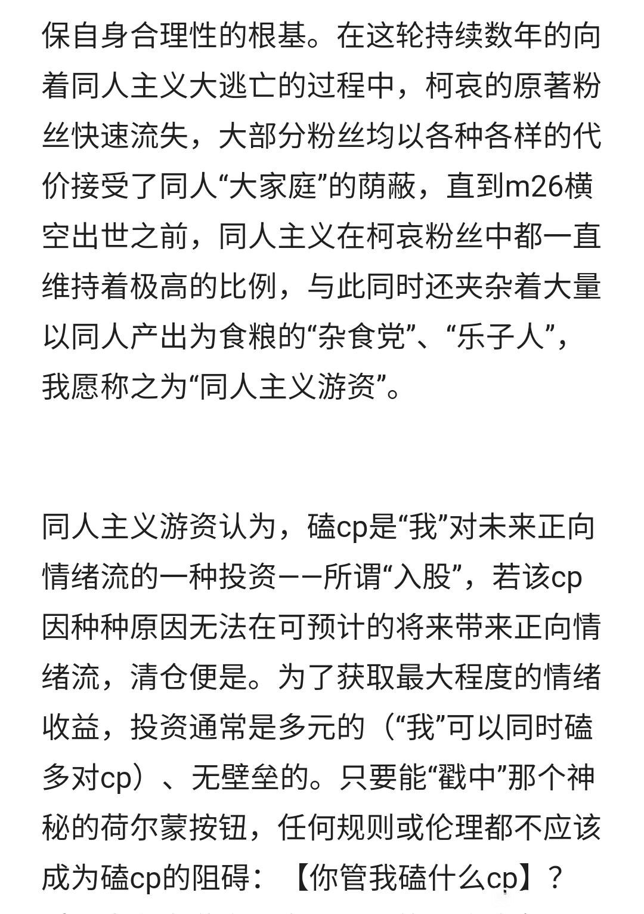
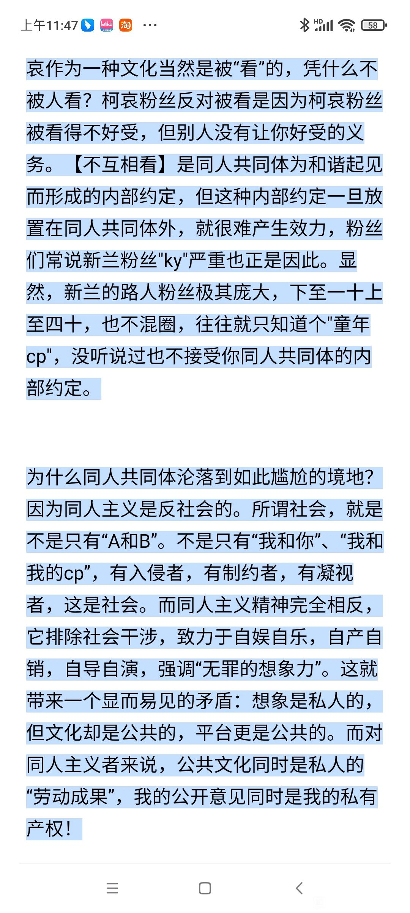
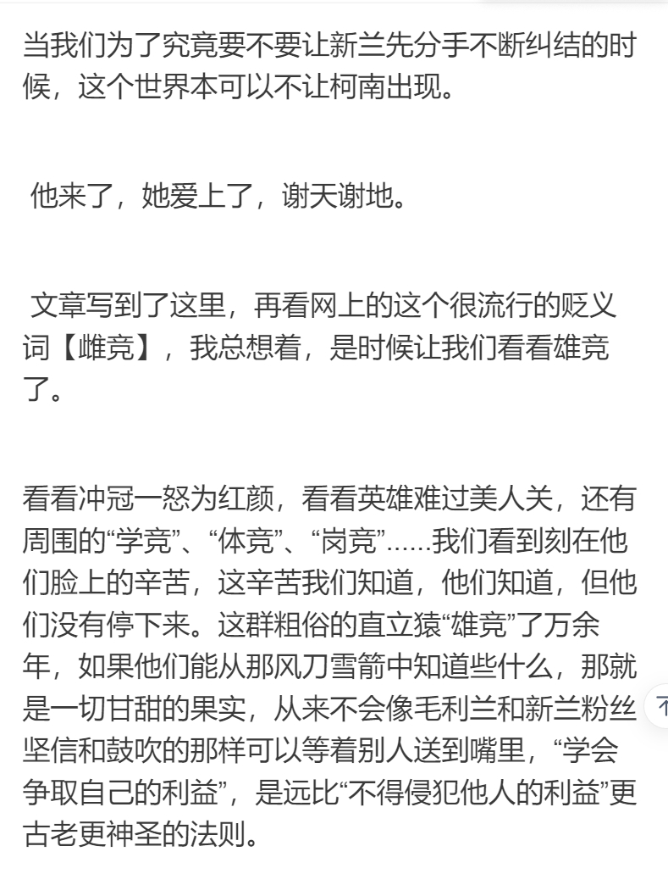

蹲
期待。但提前说一下每个时代都有每个时代的局限，就像10年前那个普遍认为be的年代，不会有人猜到m26的青山的摊牌，希望楼主不要过于岁月史书，完全以现在的眼光去审视曾经的作品
2024-04-05 21:53 | 74yuanf:没错，时代以及背景不同，不能以今天的状态去看待当时
2024-04-05 00:13 | 💥尖峰时刻⚡:当时只为求生啊


赶上直播，蹲

2024-04-05 04:09 | 贴吧用户_aCQNEJG:是这样，现在因为经济原因，人们的思想越来越趋于保守2024-04-20 12:30 | yywnpsn:振聋发聩
全文完
好像有点深奥，等等我研究研究先
等等 让我的CPU加载一下
感觉楼主的意思是觉得这几年的同人过于温柔，以至于回避了原作留下的三角关系？
2024-04-05 02:01 | -童话的星星-:是有这个意思
 原教旨主义柯哀党给楼主点赞，很感谢当年分析文吧坚持下来的同好，多年后他们的观点和坚持被青山予以支持和回响，真的很感动…至于那些用柯哀皮装自己幻想和性癖的同人，那只是自我的延伸，不是原著的延伸。
原教旨主义柯哀党给楼主点赞，很感谢当年分析文吧坚持下来的同好，多年后他们的观点和坚持被青山予以支持和回响，真的很感动…至于那些用柯哀皮装自己幻想和性癖的同人，那只是自我的延伸，不是原著的延伸。2024-04-05 06:53 | 爱丽丝小姐-:是的，我也不是不能接受新兰结局，实在是你的存在本身被人否认实在难以接受2024-04-05 09:27 | seal🌊:回复 爱丽丝小姐- :毕竟原著中无论最终是否走向柯哀，新兰关系是不可回避的坎。而能够从新兰关系走出来，一步步看清自己的心，在感情上有所成长的新一也更有魅力啦。不过有些为了观感把新兰关系摘出去的小甜饼同人，就像喝可乐一样，单纯爽一下得了，不能当饭吃2024-04-06 12:29 | 顽皮鬼才:回复 seal🌊 :2024-04-06 12:32 | 顽皮鬼才:这个是柯的问题，跟哀毫无关系。柯认得从xl关系里抽身并且向证明他完全干净，或者只被哀拆封过，就完事了，哀无非就是在这前提下选择同意或者不同意而已。
回复 seal🌊 :柯爸看都不看mll一眼，已经很能说明问题了，不需要管mll怎么跳，她跳只是她自己当小丑而已。2024-04-06 12:37 | seal🌊:回复 顽皮鬼才 :2024-04-06 12:41 | seal🌊:对啊，我就是说从目前新兰的进展来看，柯必须处理好这段关系才能进一步发展柯哀，柯哀里面柯又不能隐身，哀在我这里没什么道德枷锁的，不用这么敏感。
回复 顽皮鬼才 :其他人的态度说到底也是侧面描写，最终还是看男主本人能否想通。虽然mll在我们看来很不讨喜，但73明面上还是不会把mll写得那么不堪吧2024-04-06 12:59 | 顽皮鬼才:回复 seal🌊 :2024-04-06 13:01 | 顽皮鬼才:回复 seal🌊 :最新几话，柯开始对mll免疫，啥意思呢？mll完全变成小丑之时，柯是不会搭理的。柯要做的就是对mll完全免疫，mll不堪就不堪，跟柯无关就对了2024-04-06 13:19 | seal🌊:回复 顽皮鬼才 :2024-04-06 14:56 | 煽风点火602:看来咱们对名柯以及73的态度理解差异比较大，不过我们期待的结果是一致的，您可以自己开一层楼说说自己的看法，搁我这驴唇对马嘴没必要争论了哈。不过有一点你说对了，我对mll没多大成见，无感而已，不清楚你说的挽尊和怀疑指的是什么。
回复 seal🌊 :这位大哥一直坚持一个观点就是ca在观望sr破灭的过程中不需要考虑与毛利兰面子有关的任何问题，就是毛利兰这个角色是否不堪哪怕就这么被踩进地里都与柯哀和ca党都没有任何关系，那一天到来时我们不需要同情与毛利兰，或者说关于她之后的待遇就应该如此2024-04-06 20:44 | seal🌊:回复 煽风点火602 :我知道他的意思，但我们说的不是一个意思。我一开始的观点只是mll是ca达成之前柯必须处理的问题，脱离原著的小甜饼同人看起来不得劲，后面的是从小丑等词汇衍生出来的补充讨论。(1/2)2024-04-06 20:46 | seal🌊:回复 煽风点火602 :回复 煽风点火602 :现在Mll让读者越发厌倦的情况下，名柯世界里的角色对mll没有真情实感的讨厌，mll也没有主观作恶，个人觉得(并不是期待或认同)作为一个连载了30年的老大爷，为了给主角在情感上有所成长，73终结sr的方法不会很冰冷而已，跟考虑mll的面子有什么关系？(2/2)2024-04-06 20:50 | seal🌊:2024-04-07 11:36 | 顽皮鬼才:讨论塑造的时候肯定以原著态度为准啊，所以才认为角色主观性比较重要，侧写是一方面，侧写再多，最终也要造成主观改变形成质变才行，73是在意形式的人，我认为需要有，也会有这一刻。
回复 seal🌊 :2024-04-07 11:40 | 顽皮鬼才:回复 seal🌊 :没有任何人规定过讨厌的具体形式，脾气好的人讨厌人完全不需要说什么，更不需要做什么，只要无视、远离就完事了。柯爸妈属于典型的脾气好，他们讨厌mll的做法就是无视，哀的做法则是远离2024-04-07 11:40 | 顽皮鬼才:回复 seal🌊 :柯爸妈、哀不会把对mll的讨厌挂在嘴边，但他们可以用行为传达出讨厌

不过确实，无脑发糖的甜文，比如假装毛利兰不存在，或者上来就让新一把兰踹了的，我都不大爱看，觉得太过跳脱原著。非原著向的话无所谓，原著向的话同人作者还是应当正视这段三角关系的存在并想出破解之法
2024-04-06 12:35 | 顽皮鬼才:
这是号召战斗的檄文啊
2024-04-05 01:39 | yan771104:大佬问一下，你的周报是从5月开始的还是六月2024-04-05 02:21 | 贴吧用户_0Q8721R:回复 yan771104 :六月吧，五月我还在写分析呢，六月才回过神来做周报2024-04-05 03:16 | yan771104:大佬，能给我介绍一下茶花老师吗？我都查了两个星期的资料了，关于她的信息还是非常少。2024-04-05 03:19 | yan771104:我的每个柯哀党都无法忘却的一年——2023柯哀新兰战争回忆录已经更到4月4日了，再查不到就更不了了。2024-04-05 09:43 | 贴吧用户_0Q8721R:回复 yan771104 :茶花老师属于素人，去年的事件发生后连微博ID都改了，就是不想别人过多的关注她。你所说的信息，具体是哪方面的呢？如果是想了解去年的事件，很多人都可以给你介绍。如果是想了解茶花老师这个人，那确实没有多少人了解，了解的也未必会说。
dd
cy再看
看看国土文集吧 个人认为lz对同人的界定太绝对太极端了 也有点厚古薄今了
指出的现象虽然是客观存在的，但也只能号召，大概率也只是号召
指出的现象虽然是客观存在的，但也只能号召，大概率也只是号召
最近特别喜欢泡在老福特，看了不少同人，如同lz所说，目前给我留下最深刻印象的近期的两篇佳作（都还在连载中），都没有回避兰新志三角关系，并且对新兰关系的延续、矛盾、破裂都进行了细致的刻画。
反而一些刻意回避新兰关系、直接进入分手后阶段的文，甜则甜矣，总是不那么有力量。
但细致描写了新兰关系破裂的太太，却遭到了非议，说她“丑化小兰”，“都是很好的女孩”，“能不能专注新志”。
只能说lz真的一针见血，我也是最近才学会不再回避，M26之前我不太混圈，不知道分析文吧，不知道麦子，感觉全世界只有我一个人嗑柯哀，为了防止被伤害、被围剿，我也跟风 发出过“嗑柯哀就是嗑小哀单箭头”“如果新一和柯南是两个人就好了”“小哀是sr党”这样违心的言论，所以我太明白那段低谷之后还在坚持的老粉们的谨慎、回避、不愿惹是非。
但是我也希望大家都能正视这段关系，兰新志三角关系是天然存在的，新兰关系也不仅仅是一句不合适就能完全甩脱的，他们不合适也不是一天两天了，如果我们像新兰本人一样回避二人之间的不合适，就只能像他们目前的状态一样，别扭又纠缠不清。
反而一些刻意回避新兰关系、直接进入分手后阶段的文，甜则甜矣，总是不那么有力量。
但细致描写了新兰关系破裂的太太，却遭到了非议，说她“丑化小兰”，“都是很好的女孩”，“能不能专注新志”。
只能说lz真的一针见血，我也是最近才学会不再回避，M26之前我不太混圈，不知道分析文吧，不知道麦子，感觉全世界只有我一个人嗑柯哀，为了防止被伤害、被围剿，我也跟风 发出过“嗑柯哀就是嗑小哀单箭头”“如果新一和柯南是两个人就好了”“小哀是sr党”这样违心的言论，所以我太明白那段低谷之后还在坚持的老粉们的谨慎、回避、不愿惹是非。
但是我也希望大家都能正视这段关系，兰新志三角关系是天然存在的，新兰关系也不仅仅是一句不合适就能完全甩脱的，他们不合适也不是一天两天了，如果我们像新兰本人一样回避二人之间的不合适，就只能像他们目前的状态一样，别扭又纠缠不清。
2024-04-05 02:34 | 随意♬飘荡:具体情况得具体分析吧，有些太太能力强文笔好，我是很支持她们充分讨论和刻画柯哀兰的关系，但是有些太太能力不足，可能写出来的三角关系反而是影响观感的了，有时候我也挺想看看没有小兰的柯哀文的。2024-04-05 02:42 | 柒月居◆柒玖:回复 随意♬飘荡 :这也确实，如果刻画太过于浅薄的sr关系，反而有碍观瞻了2024-04-05 02:51 | 随意♬飘荡:我觉得随笔之类的，就是只是描写一个小故事、小场景、小灵感，只要有柯哀就可以了；但是如果写一段关系，写新志的拉扯与发展，除非完全架空背景、直接抹去小兰的存在，新兰关系现阶段好像不太能回避
回复 柒月居◆柒玖 :得看作者想刻画的重点呗，比如童话完和数理化三部曲，新兰关系就是背景板，有些文直接略过新兰关系也是能得到不错的阅读体验的，总之也没必要所有文都强求深入刻画三角关系的。2024-04-05 03:00 | 随意♬飘荡:回复 柒月居◆柒玖 :和大部分文直接跳过组织线一样，能力不足的直接跳过新兰的矛盾和分手阶段，这样未尝不是明智之举，当然总体来说还是应该支持能力强的人尽量贴合原著，积极刻画组织线和三角关系的，这样的文章上限会更加高。2024-04-05 03:42 | 柒月居◆柒玖:回复 随意♬飘荡 :是滴2024-04-05 07:22 | Angel哀ლ:说的好2024-04-06 12:40 | 顽皮鬼才:回复 柒月居◆柒玖 :
同人文应当重视刻画柯哀兰的三角关系，我也同意，可是事情也不能一概而论的，有些太太能力强文笔好，写出来的三角关系自然是没问题的，但是有些太太能力不足还强行写三角关系的话，反而会影响观感了，而且也有不少文回避三角关系，但是一样挺好看的。总之我觉得同人文大体趋势应该还原原著人设，积极讨论柯哀兰的三角关系，但是前提也得是在能力之内，能力不足强行写三角关系反而是拖后腿，反过来影响同人文阅读体验的。
一座辉煌的城市需要有繁多的地标建筑来彰显城市的魅力，但这些建筑只是一个个的点，需要合适的道路为其组成线，也需要更多的居民区为其提供面。谁又不想当地标建筑呢？但整座城市不能只有地标建筑。
2024-04-05 08:29 | -童话的星星-:缺乏地标建筑不是问题，值得警惕的是本该成为地标建筑的作品被泼上了红漆，而建筑师们也愈加对其谈虎色变
星星的这篇文就算不是从“同人cp”角度看，也是很有味道
我入柯哀圈的时间不长，没有经历过那段最为无助的时期。但是我确实看到了柯哀从偏悲观到系统分析漫画建立起来的自信的时期，再到m26的香槟。从个人的观点来说：其实磕cp这个事，无论是CA还是SR，一开始他们和其他所有的cp一样，只是不同喜欢的人建立的更符合自己兴趣的东西罢了，没有上升到严肃的文学分析。只是名柯的特殊性，必须使CA寻找出路来保全自身，所以才形成现在的局面
但是这种现象主要集中在文吧，比如在当时CA的各大视频网站的评论区CA仍是“官配”的附庸。大家都抱着二次元不愿上升到三次元的想法，心中规避着正面冲突的可能性。毕竟看同人是使我快乐不是一身火气的。所以比起宣誓合理性不如圈地自萌。
对于星星说的同人作者的软弱性，我是同意的，就像我上面说的那样。但是就如如星星所言。私人的同人作品在网上势必要经历第三人的审视的，你一句“圈地自萌”并不能阻止别人看你。那些出圈的CA同人更是如此。在这种矛盾之下，如果对家的火力过强，你就真的只能在“圈地自萌”的纸篱笆前哭而毫无办法。所以我们必须强化自身，也就是直接开怼。从满足自己磕cp的爽感上升到对柯哀本身的喜欢。这样也能写出更契合原文的作品。同人作品为CA做出了巨大贡献，但如果不认清局势，CA的情况只会慢慢下滑。毕竟在m26之前73可没有打明牌，一些BE文的作者，也是怕希望越大失望越大吧。
另还有现在的新时代写手写的合家欢作品，说他们没有社会基础是没错的，就像小孩写不出结婚一样。当然，我并不否认和谐的氛围，大家都好是再好不过了，但是这样的文是难有生命力的
而且M26后，我们不难猜出73想要柯哀兰三人关系实质性前进，必须是有冲突的，拿柯南来说，他势必要认清自己的感情，一定不是一句话就能解决的，当然名柯作为恋爱喜剧，冲突可能不明显罢了
总之，CA同人文作者的动力不是青山给的，是自己在这么多年看漫画动漫产生的，就算73不说，我们也能写出生动的柯哀文，同人文作者应该抱有对创作人物的感情，这是不可或缺的
我入柯哀圈的时间不长，没有经历过那段最为无助的时期。但是我确实看到了柯哀从偏悲观到系统分析漫画建立起来的自信的时期，再到m26的香槟。从个人的观点来说：其实磕cp这个事，无论是CA还是SR，一开始他们和其他所有的cp一样，只是不同喜欢的人建立的更符合自己兴趣的东西罢了，没有上升到严肃的文学分析。只是名柯的特殊性，必须使CA寻找出路来保全自身，所以才形成现在的局面
但是这种现象主要集中在文吧，比如在当时CA的各大视频网站的评论区CA仍是“官配”的附庸。大家都抱着二次元不愿上升到三次元的想法，心中规避着正面冲突的可能性。毕竟看同人是使我快乐不是一身火气的。所以比起宣誓合理性不如圈地自萌。
对于星星说的同人作者的软弱性，我是同意的，就像我上面说的那样。但是就如如星星所言。私人的同人作品在网上势必要经历第三人的审视的，你一句“圈地自萌”并不能阻止别人看你。那些出圈的CA同人更是如此。在这种矛盾之下，如果对家的火力过强，你就真的只能在“圈地自萌”的纸篱笆前哭而毫无办法。所以我们必须强化自身，也就是直接开怼。从满足自己磕cp的爽感上升到对柯哀本身的喜欢。这样也能写出更契合原文的作品。同人作品为CA做出了巨大贡献，但如果不认清局势，CA的情况只会慢慢下滑。毕竟在m26之前73可没有打明牌，一些BE文的作者，也是怕希望越大失望越大吧。
另还有现在的新时代写手写的合家欢作品，说他们没有社会基础是没错的，就像小孩写不出结婚一样。当然，我并不否认和谐的氛围，大家都好是再好不过了，但是这样的文是难有生命力的
而且M26后，我们不难猜出73想要柯哀兰三人关系实质性前进，必须是有冲突的，拿柯南来说，他势必要认清自己的感情，一定不是一句话就能解决的，当然名柯作为恋爱喜剧，冲突可能不明显罢了
总之，CA同人文作者的动力不是青山给的，是自己在这么多年看漫画动漫产生的，就算73不说，我们也能写出生动的柯哀文，同人文作者应该抱有对创作人物的感情，这是不可或缺的
星星提到的低谷时代主要是指红修年间，而非更上古的时期甚至是00年代。虽然在M26后被反思的文更多是后者，不过本文似乎并不是表达那样的观点。如果理解成“古早同人文低估柯哀关系”的议题恐怕就大错特错了。我大概能体会其中的意思，以一个经常看到辩论的问题为例：
如果新兰分手，新一主动分手好，还是兰主动分手好？
部分赞成兰分手更好的人认为：先指出新兰本身因不合适而分手，可以避免新一沾染移情别恋的污点。又比如，假设有这样一篇同人文：里面描写新兰和平分手，兰没有哭，很温柔，很坚强，放下了。兰表现得很好，没有被“丑化”。但那确定做到了真实吗？
想起《白色相簿2》序章结尾前雪菜被春希甩掉时，她试图说服身边的人和自己：自己不应该破坏地插入春希和冬马的关系。她之前只是想维持三个人的时光，所以才破坏平衡，但她现在反思了，并试图以此与内心和解。然而，这其实是在欺骗内心，麻痹自我，隐藏矛盾，回避真实。她想要的真实毫无疑问是和心上人在一起。
所以说回新兰假若有和平分手，假若兰没有哭，她究竟是真的放下了，还是在欺骗自己放下了？她到底是在欺骗自己放下了，还是虚假的世界操纵她放下了！
这不是丑化，而是尊敬。所以，我不是说要去不尊重兰，而是说，写兰分手时，有没有尊重兰真正的内心。痛苦就是痛苦，不需要用和平粉饰。不要逃避自己的命运，也不要逃避角色的内心。
对于柯哀也是一样。如果是新一主动分手，他到底是一时冲动还是真正深思熟虑。如果哀听闻新兰分手，大事不妙的惊惶后该有没有半点不受控制的窃喜。到底要先切断新兰缘再让柯哀发展，还是维持着新兰交往的前提让柯哀情愫横生。是角色们真真正正没有污点，还是作者在用没有污点的世界营造顺理成章的假象。这大抵就是标题所说的，每个人可以看似都很好，但世界也许是坏掉的。
如果新兰分手，新一主动分手好，还是兰主动分手好？
部分赞成兰分手更好的人认为：先指出新兰本身因不合适而分手，可以避免新一沾染移情别恋的污点。又比如，假设有这样一篇同人文：里面描写新兰和平分手，兰没有哭，很温柔，很坚强，放下了。兰表现得很好，没有被“丑化”。但那确定做到了真实吗？
想起《白色相簿2》序章结尾前雪菜被春希甩掉时，她试图说服身边的人和自己：自己不应该破坏地插入春希和冬马的关系。她之前只是想维持三个人的时光，所以才破坏平衡，但她现在反思了，并试图以此与内心和解。然而，这其实是在欺骗内心，麻痹自我，隐藏矛盾，回避真实。她想要的真实毫无疑问是和心上人在一起。
所以说回新兰假若有和平分手，假若兰没有哭，她究竟是真的放下了，还是在欺骗自己放下了？她到底是在欺骗自己放下了，还是虚假的世界操纵她放下了！
这不是丑化，而是尊敬。所以，我不是说要去不尊重兰，而是说，写兰分手时，有没有尊重兰真正的内心。痛苦就是痛苦，不需要用和平粉饰。不要逃避自己的命运，也不要逃避角色的内心。
对于柯哀也是一样。如果是新一主动分手，他到底是一时冲动还是真正深思熟虑。如果哀听闻新兰分手，大事不妙的惊惶后该有没有半点不受控制的窃喜。到底要先切断新兰缘再让柯哀发展，还是维持着新兰交往的前提让柯哀情愫横生。是角色们真真正正没有污点，还是作者在用没有污点的世界营造顺理成章的假象。这大抵就是标题所说的，每个人可以看似都很好，但世界也许是坏掉的。
2024-04-06 12:45 | 顽皮鬼才:
我看到这贴子就想起近来一直在追看的《没有我的他和她的以后》。真的是超级精彩的同人，但是因为解构兰姐而遭到了各种方面的洁癖患者的猛烈攻击，搞得作者三天两头炸毛，好在没有导致弃坑而去……嗯其实除去作者挂出来的内容外，我并没有直接看到那些攻击内容，不过想也就是那种隔壁的“你们搞CP为什么一定要带上兰”以及咱们这边的低幼型“只想看甜甜的糖为什么要自找麻烦”或者“兰姐也是个好人”的圣母言论……
而对于我来说兰姐真是太有趣了故事没有兰姐乱入真的少了很多精彩啊教我怎么不爱她（）
话说近来还看到个新一跟兰姐分手，然后兰姐斩钉截铁要了100w分手费便成功分了的……
我：啊？
虽然这样也不是不行只是有点太神转折了。不过那篇文故事编得一般而且柯哀之间的互动品不出多少（我心中）真实柯哀的感觉才导致我弃文逃走……我就觉得吧，连兰神都把握不好基本上更难把握更为复杂的柯哀关系……
当然把兰姐甩一边也是说就不够支撑故事了，不过将甩开兰姐当成规定动作然后兰姐走得十分草率终归是让人十分出戏的安排。
以及相较而言某些文中的组织走得比兰姐更草率然后直接就进入发糖环节更让我陷入沉思……
话说我自己也曾经考虑过写文时要不要将兰姐草率送走，但最后还是坚持塑造了兰姐，毕竟我实际上是在把同人当分析文写……？不过即便如此我还是觉得自己不可能更进一步写出兰姐主视角的这种故事。兰姐主视角可能真的是女性作者限定题材，把握不住把握不住……
所以最终的结论其实与本贴主题是一致的——突破舒适区啊！躺着吃到的糖不甜！认真对待自己要塑造的故事，趟过无数外人指责的“雷点”，最后的爽点才能淋漓尽致~！
没了
而对于我来说兰姐真是太有趣了故事没有兰姐乱入真的少了很多精彩啊教我怎么不爱她（）
话说近来还看到个新一跟兰姐分手，然后兰姐斩钉截铁要了100w分手费便成功分了的……
我：啊？
虽然这样也不是不行只是有点太神转折了。不过那篇文故事编得一般而且柯哀之间的互动品不出多少（我心中）真实柯哀的感觉才导致我弃文逃走……我就觉得吧，连兰神都把握不好基本上更难把握更为复杂的柯哀关系……
当然把兰姐甩一边也是说就不够支撑故事了，不过将甩开兰姐当成规定动作然后兰姐走得十分草率终归是让人十分出戏的安排。
以及相较而言某些文中的组织走得比兰姐更草率然后直接就进入发糖环节更让我陷入沉思……
话说我自己也曾经考虑过写文时要不要将兰姐草率送走，但最后还是坚持塑造了兰姐，毕竟我实际上是在把同人当分析文写……？不过即便如此我还是觉得自己不可能更进一步写出兰姐主视角的这种故事。兰姐主视角可能真的是女性作者限定题材，把握不住把握不住……
所以最终的结论其实与本贴主题是一致的——突破舒适区啊！躺着吃到的糖不甜！认真对待自己要塑造的故事，趟过无数外人指责的“雷点”，最后的爽点才能淋漓尽致~！
没了
楼主是要去别的地方发帖？
说来这种观点也并非没人提过，如果想要让海量同人文都遵循这一观点而前进，那未免也过于局限，就如同每个人对于故事本身的喜好并不相同，即便是柯哀党，不同的人对这对cp也存在不同的理解，如果你认为淡化新兰哀之间的矛盾属于偏离了原作同人文的本意这一点，那我觉得大可不必，我自认为看的同人文也绝不在少数，总结来说十篇有八篇都是be，即便是自M26之后be文的产出也绝不算少，看完之后的感想是什么？压抑，没错，就是压抑，就算是残酷的世界也需要有一点曙光才能看到希望，我们的生活本就困顿艰难，如果连追求虚构的世界都不允许出现童话故事，那也就没有所谓的愿景了
2024-04-05 08:39 | 随意♬飘荡:有那么恐怖吗？我看的同人也不少，感觉还是看了挺多he的啊，毕竟我基本上只看he的，除非写得特别好的be文，比如病入膏肓天梯月球下的人这种也会接受的。2024-04-05 11:20 | DMCNDS:回复 随意♬飘荡 :确实很恐怖，有时候我看文都是先看评论了解个大概，就因为be看太多，怕了2024-04-05 11:24 | DMCNDS:，有时候开局挺正常的，过程虽然有起伏也有糖，但很多时候都会在结尾处莫名其妙给你来一刀，而你还未曾准备好，总之很多都是意难平
回复 随意♬飘荡 :我并不是那种追求什么be美学的人，我嗑cp很简单，只要两人能够健健康康，幸福快乐我就满足了，我来到虚拟世界是寻求快乐的不是找虐的，我敢肯定多数人都是这种想法2024-04-05 11:26 | 随意♬飘荡:回复 DMCNDS :我倒看了挺多he同人，我觉得没有那么夸张吧，甚至古老文也有不少是he结局的，更别说m26后的同人文了。2024-04-05 11:29 | 随意♬飘荡:回复 DMCNDS :当然，我看柯哀同人文也只想看他们结局能幸幸福福在一起，不过生离死别的be美学倒也可以接受啦，最讨厌犹豫迟钝逃避道德绑架和移情别恋的be类型，这种为虐而虐的be文压根就不好嗑。2024-04-05 11:36 | DMCNDS:回复 随意♬飘荡 :确实，那种犹豫迟钝逃避最后错过的才是真正的狗血2024-04-05 11:37 | DMCNDS:回复 随意♬飘荡 :什么放任灰原逃走根本就是扯淡，月台追妻难道还不够明确小柯的立场吗？2024-04-05 12:45 | 随意♬飘荡:回复 DMCNDS :不要逃避自己命运，内心也同理不要逃避啊，而且犹豫迟钝逃避和移情别恋的be套路全都是低估了柯哀之间的感情，我都觉得双箭头的柯哀是不会be的，除了生离死别，命运共同体加成的爱情是没有人能介入的。

我觉得楼主想说的不仅仅是如何写同人文的问题，而是我们嗑cp的一个根本问题，就像文吧虽然嗑柯哀，但分析新兰比对面还多，一段三角关系就不可能避免与对家产生联系，我们要正视矛盾而不是回避矛盾
回应一类质疑：【柯哀同人文允许多样性，整齐划一的写作标准既无法实现，对那些尚无法驾驭三角关系的写手而言也显得过于刻薄】：
关于三角关系的写作确实是有挑战性的，但问题也恰在此处。和那些在安全区绣花的写手相比，这些更需要鼓励的三角关系的挑战者反而遭到了更多的非议，对于绣花师，只有我写了区区的一篇百余赞的分析文作为批判，过不了几天，它就会沉入分析文吧的水下，和三角关系的挑战者们在文章评论区受到的源源不断的匪夷所思的质疑相比，绣花师们因为我的分析文而受到的顶多几天的委屈又算得了什么呢，他们早就被保护得足够好了，可就算我的分析文不会起到多大的作用，我依然要亮明我的态度：
挑战者们哪怕是狼狈地失败了，也比那些安全区的绣花师更值得我的敬意
关于三角关系的写作确实是有挑战性的，但问题也恰在此处。和那些在安全区绣花的写手相比，这些更需要鼓励的三角关系的挑战者反而遭到了更多的非议，对于绣花师，只有我写了区区的一篇百余赞的分析文作为批判，过不了几天，它就会沉入分析文吧的水下，和三角关系的挑战者们在文章评论区受到的源源不断的匪夷所思的质疑相比，绣花师们因为我的分析文而受到的顶多几天的委屈又算得了什么呢，他们早就被保护得足够好了，可就算我的分析文不会起到多大的作用，我依然要亮明我的态度：
挑战者们哪怕是狼狈地失败了，也比那些安全区的绣花师更值得我的敬意
2024-04-05 21:57 | 贴吧用户_QaCb6EK:这点说的不错，我一直认为优秀的柯哀同人不能回避柯哀兰三角关系和拆新兰的问题
同人的本质还是同人作者自身世界观和所处环境的一种投射，文艺作品的诞生代表的是结果而不是过程
如果只是谴责某些作者理解上的问题，最后还是会跳进“这篇同人是否ooc”的牛角尖里被反复批判，而同人并不是原作，个人并不赞同同人作者需要接受类似的询问
在这个领域并不需要批判，大家更缺乏的是支持
如果只是谴责某些作者理解上的问题，最后还是会跳进“这篇同人是否ooc”的牛角尖里被反复批判，而同人并不是原作，个人并不赞同同人作者需要接受类似的询问
在这个领域并不需要批判，大家更缺乏的是支持
2024-04-05 13:30 | CoAi_4869:
总结下核心思想就是柯哀同人也要有战斗性，归根结底人是社会性动物，脱离了广大群众搞小圈子最后的结果就是慢性死亡。仔细分析，近些年的很多同人和很多观点其实就是在逃避，不敢去直面三角关系，不敢去争，殊不知名柯真正的核心和最有故事性最能传世的那就是柯哀兰三角，我们就是要大大方方的说明这就是党争，而且就是柯哀胜过新兰。举个例子，就好像有的人觉得新兰要分但只能是因为他们不合适不能是因为柯哀的感情而分，这就是怕的一种体现，怕被骂，怕他们感情不纯粹不美好，这种想法就很容易被现实剧情打脸，要我说新兰固然是不合适，但更重要的是柯哀是天作之合，命定一对，就是要因为这个理由去否掉新兰，那才是最大不留死角的胜利呢

回应第二种质疑：【读者对柯哀关系有权利存在不同的理解，同人的本质是个人世界观的投射，对同人是否“偏离原著”的问题穷追不舍将是无休止也是无意义的】
之所以批判一部分同人并非是因为它们偏离原著，而是这部分同人回避矛盾。实际上，大量远古柯哀同人文不仅不会回避矛盾，它们还愿意扩大矛盾，甚至愿意没有矛盾创造矛盾，这些被当代粉丝批判为“狗血”、“悲观”和“ooc”的剧情，即便和原著有多多少少的偏差，我都以为比当代的部分同人强上百倍
不论人们如何抵制矛盾，逃避矛盾，矛盾都是世界的一部分。之所以欢迎矛盾，既是因为这是世界的本来面目，更是因为我想知道爱能做到的还有什么。爱能战胜矛盾吗？爱能够在一团漆黑的酱缸里回应人们的期盼吗？我需要知道它。如果爱只是在人工排除了一切矛盾的玻璃管里才能昙花一现，那么爱有什么价值呢？
之所以批判一部分同人并非是因为它们偏离原著，而是这部分同人回避矛盾。实际上，大量远古柯哀同人文不仅不会回避矛盾，它们还愿意扩大矛盾，甚至愿意没有矛盾创造矛盾，这些被当代粉丝批判为“狗血”、“悲观”和“ooc”的剧情，即便和原著有多多少少的偏差，我都以为比当代的部分同人强上百倍
不论人们如何抵制矛盾，逃避矛盾，矛盾都是世界的一部分。之所以欢迎矛盾，既是因为这是世界的本来面目，更是因为我想知道爱能做到的还有什么。爱能战胜矛盾吗？爱能够在一团漆黑的酱缸里回应人们的期盼吗？我需要知道它。如果爱只是在人工排除了一切矛盾的玻璃管里才能昙花一现，那么爱有什么价值呢？
2024-04-05 23:15 | 贴吧用户_00QG4a3:其实衡量的标准本不应该是有没有存在“偏离原作”的问题。毕竟同人的创作动机中就隐含了对原作的不满意，从而“偏离原作”在一定程度上是必然出现的。因此评判标准应该是“偏离”的部分有没有做到比原作更高明，矛盾这东西也要处理的比原作高才好看。2024-04-05 23:16 | 贴吧用户_00QG4a3:回复 -童话的星星- :所以，刻意回避矛盾的作品，也就断无可能在这方面与原作竞争了（但也不排除其他方面极其出众的可能性，然而……）2024-04-05 23:22 | -童话的星星-:回复 贴吧用户_00QG4a3 :是的，断无可能竞争
同人是同人，原作是原作。同人是自由的，可以扩展原作的世界观，自然也可以忽略掉原作的某些设定/关系。笔在创作者手里，想怎么写就怎么写，可以不必受到原作的某些设定/关系的束缚/限制而尽情创作。
回来看贴，还是有些话想说：
同人文是同人作者自身经历的映射，就像之前说的，孩子写不出结婚，大多只是徒有其表罢了，只会让人感觉文笔好可爱，当然，这是比方
但不妨碍我们允许各类文的存在，且并没有为了“地标建筑”否定“居民区”的存在；我们否定的只是“违章建筑”。是那些打着柯哀旗号，却无限度yy的人。这样的文章已经脱离了柯哀的内核
这类文我认为是需要批判的，这不是ooc的问题，这就不是柯哀。柯哀的内核是什么，我认为答案显而易见—命运共同体。这不仅仅是从小两口的经历体现的，更处处体现他们的拌嘴打闹中。他们的一举一动都让我们觉得般配，我想这也是大家的想法，我并不排斥ooc，甚至可以换个叫法—if线。但无论他们怎么变，他们的内核是不变的。
再说矛盾，柯哀本身就是矛盾的产物，那柯哀兰三者关系举例，柯南对兰和哀的感情矛盾，哀对柯南的矛盾。还有很多很多……
矛盾贯穿于自始至终，应该说没有矛盾就没有柯哀。规避矛盾本身就在否定柯哀
柯哀的爱是矛盾之下的爱，而这份爱一定是在矛盾达到顶峰时才能完全结果。我始终认为同人文要想写好首先要尊重人物。
柯哀的糖可没有工业糖精那般劣质呐
（应该说这不完全是对星星文的评价，更多的是我的胡言乱语以上）
同人文是同人作者自身经历的映射，就像之前说的，孩子写不出结婚，大多只是徒有其表罢了，只会让人感觉文笔好可爱，当然，这是比方
但不妨碍我们允许各类文的存在，且并没有为了“地标建筑”否定“居民区”的存在；我们否定的只是“违章建筑”。是那些打着柯哀旗号，却无限度yy的人。这样的文章已经脱离了柯哀的内核
这类文我认为是需要批判的，这不是ooc的问题，这就不是柯哀。柯哀的内核是什么，我认为答案显而易见—命运共同体。这不仅仅是从小两口的经历体现的，更处处体现他们的拌嘴打闹中。他们的一举一动都让我们觉得般配，我想这也是大家的想法，我并不排斥ooc，甚至可以换个叫法—if线。但无论他们怎么变，他们的内核是不变的。
再说矛盾，柯哀本身就是矛盾的产物，那柯哀兰三者关系举例，柯南对兰和哀的感情矛盾，哀对柯南的矛盾。还有很多很多……
矛盾贯穿于自始至终，应该说没有矛盾就没有柯哀。规避矛盾本身就在否定柯哀
柯哀的爱是矛盾之下的爱，而这份爱一定是在矛盾达到顶峰时才能完全结果。我始终认为同人文要想写好首先要尊重人物。
柯哀的糖可没有工业糖精那般劣质呐
（应该说这不完全是对星星文的评价，更多的是我的胡言乱语
以上）同人作品本质是为爱发电 每个人有每个人的品味 各位大可以自己去按自己的品味去创造和刻画你心里的愿景 但不该去指指点点教其他同人创作者做事
这个只要搞过一些二刺猿圈子都应该明白对用爱发电的同人管教太多这是挺忌讳的事情
分析文吧可以去分析原作相关 但对同人指指点点这事儿 只会惹一身腥
这个只要搞过一些二刺猿圈子都应该明白对用爱发电的同人管教太多这是挺忌讳的事情
分析文吧可以去分析原作相关 但对同人指指点点这事儿 只会惹一身腥
2024-04-05 21:49 | -童话的星星-:感谢评论，已经回应了

楼主是认为m26之后很多同人文因为追求he和柯哀两人“甜”的过程，从而回避了作者一开始就有的问题，即新志兰大三角，而回避了这个问题，这样的同人文就是一层批了柯哀表层的作品，而没有触及柯南内核所在?(没有语言能力的人尽力整理出来的)(至于不在发帖的原因，是因为觉得现在这边风气乐观化过头，经常有同人作者回避矛盾?)(而假如当青山帮绣花师们亲自把矛盾解除，希望那时候的作品，也能在多想些矛盾新法哈哈，到时候希望楼主再回来开一贴，怎么样
2024-04-05 20:47 | -童话的星星-:不再发帖的原因是我已决定放弃圈地自萌的保护，不再把自己的分析文视为圈地自萌的地方产物2024-04-06 03:07 | 许炜滔:回复 -童话的星星- :那我会在新的地方支持楼主的分析文！
回应第三种质疑：【笔在作者身上，作者对笔下同人文的面貌塑造掌握绝对的主权，读者对同人文的批判在程序上是可疑的，多管闲事将带来不必要的麻烦】
如文中所说，同人创作由于它的无偿性和耗时性，在道德上对其进行挑战本身就是一件挑战道德的事情。我无法让自己完全排除失德的嫌疑，但我愿意在我的能力范围内做到对同人文的尽可能的尊重，为了表示尊重，我选择的方式是【对等】。
这篇分析文是我近年来对同人环境观察、记录的产物，在写作过程中，我不断地进行反问和打磨，对文字也在进行不断斟酌以求能达到尽可能好的效果，虽然因为我才能的有限和个人效率的不高，这篇分析文很可能不值得花费如此之多的精力，但我想它大致抵得上一则短篇同人的体量和文字力量。我希望用这种方式让写手们感到他们的作品是被我以尽可能同等付出的方式回应的，这样我能稍稍地无愧于心
如文中所说，同人创作由于它的无偿性和耗时性，在道德上对其进行挑战本身就是一件挑战道德的事情。我无法让自己完全排除失德的嫌疑，但我愿意在我的能力范围内做到对同人文的尽可能的尊重，为了表示尊重，我选择的方式是【对等】。
这篇分析文是我近年来对同人环境观察、记录的产物，在写作过程中，我不断地进行反问和打磨，对文字也在进行不断斟酌以求能达到尽可能好的效果，虽然因为我才能的有限和个人效率的不高，这篇分析文很可能不值得花费如此之多的精力，但我想它大致抵得上一则短篇同人的体量和文字力量。我希望用这种方式让写手们感到他们的作品是被我以尽可能同等付出的方式回应的，这样我能稍稍地无愧于心
可以👍
cy
对第四种质疑的回应：【同人得到的支持不是太多而是太少，远没到读者挑肥拣瘦的时候，对同人的随意点评会引起不必要的矛盾（惹了一身腥）】
这些质疑确实是对我的警示，警示我是否尽到了爱的责任。我能够说，不在任何平台公开点名，不在评论区直接叫板，不和作者直接对话，我通过履行这三项原则为同人作者们留出“私人空间”
这些质疑确实是对我的警示，警示我是否尽到了爱的责任。我能够说，不在任何平台公开点名，不在评论区直接叫板，不和作者直接对话，我通过履行这三项原则为同人作者们留出“私人空间”
个人观点（你也可以称我为原作原教旨主义者）：
先说暴论： 从同人文创作的原理来说，这种文体就不可能会是不ooc的。唯一能不ooc的只有原作本身。而反过来说，如果观众觉得原作ooc了或者写崩了，那是观众对于角色的理解ooc了。
再作解释（扯淡）：首先从创作原理来讲，我认为最重要的一点是：继承。各个同人文的作者都要从原作中继承一部分原作的特点，否则就完全不能称为同人。而继承的东西和程度有多有少：最少的不过是继承了原作的人物名字，继承的多的能继承人物性格，人物画像（形象），以及人物人际关系等等，再继承更多的甚至继承原作的时间线乃至主线剧情。
但是，请注意，我说的继承不是简单的引用，不是故事背景和设定，是同人的创作者真真正正的将原作的精神和意志在他自己的故事中的运行和体现，否则就不叫继承。继承是一种感觉，一种青山刚昌原作漫画中的人物活在这个同人的故事的感觉。但是由于每人对原作的感受与理解不同，没有人能完美的继承原作的每一个特点，而反过来说，继承了原作每一个特点的同人文都必然也必将沿着原作的路线一丝不差的走下去。
拿一个数学中不完善的比喻：创作同人的过程是一个曲线拟合的过程，用泰勒公式不断拟合原来曲线，继承的属性越多拟合就越完善，完全拟合下去就是原来的曲线。但是文学创作不是数学，何况泰勒公式也有收敛半径，因此最好的同人文创作者（仅以贴合原作为目标）也只能在原作最新的时间线上对所有属性进行继承，故事情节的走向也只能是沿着那一点的导数方向，终究不能是原函数。当然还有各种继承难易和属性挖掘的问题，要是有人对这种稀奇古怪的观点有兴趣我就单开个帖子扯扯淡（估计没有）
回到楼主的观点，各位创作者有各位创作者的初心，继承属性的多少取决于他们的创作目标和对原作的理解程度。而同人的走向和结构安排与创作的目的和个人能力有关。青山这让人深刻了20多年的大三角关系自然是原作最难继承的几点之一，而如何解决更是一个错综复杂难上加难的问题。所以我感觉楼主是否将同人的创作想的太简单了一点；将创作同人的目标想的太深刻了一点；或者作者受到党争影响，将过去乃至现在的部分失利也归结在部分同人创作的选材上来。就我所看到的不同的若干同人文也有数百篇，长短皆有笔力参差不齐，但是对大三角深度继承而又解决的寥寥无几，且都各有各的细致与仓促。那些笔力相当深厚的作者尚且如此，又怎能要求其他那些非专业且只是盼着自己cp幸福快乐的小作者设计那样复杂的情节呢？同人用于党争冲锋还是对家先起头，而对家的文基本就属于除了原作的人物名字和过往剧情丝毫没有可取继承之处的文章。作为同人食之无味，只是他们自己的发泄和幻梦，本质上还是和许多小作者的文章一样，但是添加了不少对角色和对家的人身攻击。我个人认为同人还是纯粹一些，不要掺和党争，要么以发掘和继承原作为目标，要么发泄释放自己对cp的美好理想，甚至只是把自己的经历投射进去，专注于文学创作和给他人带来深刻体验都挺好，还是少涉及一些乌烟瘴气的东西比较好吧。
我也花费了不少的精力来描述我对作品理解和同人创作原理的解构，请要喷的时候给我一点尊重，起码看完全文觉得我稀奇古怪的观点有意思我可以单开个帖子扯个淡
先说暴论： 从同人文创作的原理来说，这种文体就不可能会是不ooc的。唯一能不ooc的只有原作本身。而反过来说，如果观众觉得原作ooc了或者写崩了，那是观众对于角色的理解ooc了。
再作解释（扯淡）：首先从创作原理来讲，我认为最重要的一点是：继承。各个同人文的作者都要从原作中继承一部分原作的特点，否则就完全不能称为同人。而继承的东西和程度有多有少：最少的不过是继承了原作的人物名字，继承的多的能继承人物性格，人物画像（形象），以及人物人际关系等等，再继承更多的甚至继承原作的时间线乃至主线剧情。
但是，请注意，我说的继承不是简单的引用，不是故事背景和设定，是同人的创作者真真正正的将原作的精神和意志在他自己的故事中的运行和体现，否则就不叫继承。继承是一种感觉，一种青山刚昌原作漫画中的人物活在这个同人的故事的感觉。但是由于每人对原作的感受与理解不同，没有人能完美的继承原作的每一个特点，而反过来说，继承了原作每一个特点的同人文都必然也必将沿着原作的路线一丝不差的走下去。
拿一个数学中不完善的比喻：创作同人的过程是一个曲线拟合的过程，用泰勒公式不断拟合原来曲线，继承的属性越多拟合就越完善，完全拟合下去就是原来的曲线。但是文学创作不是数学，何况泰勒公式也有收敛半径，因此最好的同人文创作者（仅以贴合原作为目标）也只能在原作最新的时间线上对所有属性进行继承，故事情节的走向也只能是沿着那一点的导数方向，终究不能是原函数。当然还有各种继承难易和属性挖掘的问题，要是有人对这种稀奇古怪的观点有兴趣我就单开个帖子扯扯淡（估计没有）
回到楼主的观点，各位创作者有各位创作者的初心，继承属性的多少取决于他们的创作目标和对原作的理解程度。而同人的走向和结构安排与创作的目的和个人能力有关。青山这让人深刻了20多年的大三角关系自然是原作最难继承的几点之一，而如何解决更是一个错综复杂难上加难的问题。所以我感觉楼主是否将同人的创作想的太简单了一点；将创作同人的目标想的太深刻了一点；或者作者受到党争影响，将过去乃至现在的部分失利也归结在部分同人创作的选材上来。就我所看到的不同的若干同人文也有数百篇，长短皆有笔力参差不齐，但是对大三角深度继承而又解决的寥寥无几，且都各有各的细致与仓促。那些笔力相当深厚的作者尚且如此，又怎能要求其他那些非专业且只是盼着自己cp幸福快乐的小作者设计那样复杂的情节呢？同人用于党争冲锋还是对家先起头，而对家的文基本就属于除了原作的人物名字和过往剧情丝毫没有可取继承之处的文章。作为同人食之无味，只是他们自己的发泄和幻梦，本质上还是和许多小作者的文章一样，但是添加了不少对角色和对家的人身攻击。我个人认为同人还是纯粹一些，不要掺和党争，要么以发掘和继承原作为目标，要么发泄释放自己对cp的美好理想，甚至只是把自己的经历投射进去，专注于文学创作和给他人带来深刻体验都挺好，还是少涉及一些乌烟瘴气的东西比较好吧。
我也花费了不少的精力来描述我对作品理解和同人创作原理的解构，请要喷的时候给我一点尊重，起码看完全文
觉得我稀奇古怪的观点有意思我可以单开个帖子扯个淡2024-04-06 05:34 | 贴吧用户_00QG4a3:人物的塑造逻辑上无法自洽便是崩了，无论是原作或同人都是同一标准。所以会看到主线和日常间人物形象是撕裂的。这一点上兰姐就很有优势，因为她根本进不了主线2024-04-06 11:19 | -童话的星星-:没理解错的话，你的意思应该是：【因为让同人“继承”原作的复杂关系超出了大多数写手的能力范围，所以不如退而求其次致力于让同人满足作者和读者的需求】。对吧2024-04-06 11:33 | -童话的星星-:不瞒你说，和党争相比，我反而非常难以接受那些“纯粹”的东西。在我眼里“纯粹”的柯哀就像是被魔仙棒变出的魔仙堡一般，我的想法是：【这世界要是有这么简单就好了，可沉浸在幻觉里有什么意义呢？】，我希望柯哀教给我的信念是可供指导我的现实人生的2024-04-06 20:01 | MC像素时光:回复 贴吧用户_00QG4a3 :正确的2024-04-06 20:02 | MC像素时光:回复 贴吧用户_00QG4a3 :但是确实在原作的创作上也需要符合事情发展和人物性格变化的逻辑，所以我认为这种无法自洽的地方相当于一个连续函数的不可导点，在这个点两边的故事走向发生了突变。不论观众和同人创作者是否接受这样的尖点2024-04-06 20:02 | MC像素时光:回复 贴吧用户_00QG4a3 :打个比方现在开朗活泼的哀酱突然在下次过生日的时候从11楼跳下了，这完全不合逻辑，咱们完全可以说它崩了，在这件事前后故事的逻辑发生了突变，但是咱们不能称它ooc了。因为ooc是相对于原作的人物性格而言的。2024-04-06 20:03 | MC像素时光:回复 贴吧用户_00QG4a3 :类似于在调用函数的时候函数本身的映射逻辑发生了改变，我们也没法说是自己代值计算的有问题这样，青山这么写等于把一个加法的逻辑硬生生改成减法，而创作者将这样的人物写到自己的故事里等于带入自己的值按照青山的逻辑去计算2024-04-06 20:03 | MC像素时光:回复 贴吧用户_00QG4a3 :于是在他们的故事里志保或者哀酱也在生日的时候跳了2024-04-06 20:09 | MC像素时光:（当然选择不继承这段崩了的原作逻辑另说） 简单点说，原作的崩了可以说不合逻辑，同人的崩了可以说是ooc，但是ooc这个概念不是用在原作上面的
回复 -童话的星星- :我的理解纯粹的柯哀就是原作的柯哀，同人写手无论是否向原作靠近或者以还原原作为目标，都不可能比原作纯粹。因为原作是柯哀这一形式的最初定义，同人只是在定义上抒发自己的理解。所以纯粹的柯哀一点也不简单，更别提继承原作关系并解决了。2024-04-06 20:16 | MC像素时光:回复 -童话的星星- :至于你提到的魔仙堡更像是同人写手仅继承了部分人物设定和性格写出的合家欢梦幻作品。原作不论人物还是关系可都不是这样类型的，原作也实质性的对各位创作者读者包括你我给予了现实人生的精神指导。2024-04-06 20:57 | MC像素时光:回复 -童话的星星- :所以我觉得你在寻求同人给予你现实指导这一点不太合适，因为毕竟同人不是柯哀关系的第一定义，也无法完美继承。2024-04-06 21:02 | MC像素时光:回复 -童话的星星- :所以我的愿望是能有高质量的同人看，能尽可能还原原作的纯粹柯哀关系，继承原作的各种情感问题和剧情问题以精彩的方式解决而不是作为党争的寄托。党争混在同人里总感觉现实世界的乌烟瘴气仍未散尽。2024-04-06 21:06 | MC像素时光:回复 -童话的星星- :在原作里给与我们精神指导和支柱的柯哀关系以及反思的新兰关系都是纯粹的，因此对现实有指导意义，否则要是加入现实的乌烟瘴气，让世人的目光和言论左右了角色的行动和关系那不是成为了党争的牺牲品吗2024-04-06 21:10 | MC像素时光:回复 -童话的星星- :很抱歉回复你这么多条消息，本来其实都写好了才发现楼中楼有字数限制2024-04-06 21:33 | 离征◎:回复 -童话的星星- :那种“纯粹”的柯哀更像是消灭组织，真相大白后的后日谈2024-04-06 21:44 | 冰洁圣天:回复 -童话的星星- :柯哀的底层是柯哀。如果纠结大三角，那实际上是柯兰哀。如果一定要将同人中柯哀的底层定性为柯兰哀....当你凝视深渊的时候深渊也在凝视着你。随着群体的扩大，素质的参差...这种做法的后果是很恐怖的...2024-04-06 22:22 | -童话的星星-:回复 冰洁圣天 :深渊确实在凝视我，但深渊不会因为我选择逃避它而在事实上远离我，我不愿意在我的余生都和这只时隐时现的幽灵作伴。直面恐惧，我相信人类挺拔的肩膀就是抵御深渊的万丈金身2024-04-06 22:36 | -童话的星星-:回复 MC像素时光 :感谢回复，我需要花些时间组织下语言，在楼下回复你的观点2024-04-06 22:53 | 冰洁圣天:回复 -童话的星星- :我相信个体的能动性但不相信整体的执行性。没有足够高的约束力那这种方式必然会被滥用的。

楼上某些观点我不能同意。
三角关系啥样，哀不是已经定调了么？不按照哀说的去写，那当然是有问题的。你以为是回避矛盾，实则把你自己的想法凌驾于原作者之上。作者已经明确让柯对mll免疫了，那只有可能增强免疫，直到完全免疫，完全勿听，这不是回避矛盾，而是正常展开，从关注mll到完全无视mll才是作者的想法。
哀说柯是恋爱白痴，接下来三角的脉络已经太清楚不过了，定死了，不可能有其他可能性。
第一个可能性，就是柯继续白痴下去，不知道珍惜哀，把过家家当成真正的恋爱结婚。那就步入mll爸妈后尘吧，好言难劝该死的鬼。
第二个可能性，柯不想当恋爱白痴。不想当还不算，必须向哀证明自己不是恋爱白痴。如何证明，当然就是一边果断清退以mll为代表的非哀的同龄女性，另一边果断直球向哀求婚。
到底选哪一种，应该不需要我解释。
三角关系啥样，哀不是已经定调了么？不按照哀说的去写，那当然是有问题的。你以为是回避矛盾，实则把你自己的想法凌驾于原作者之上。作者已经明确让柯对mll免疫了，那只有可能增强免疫，直到完全免疫，完全勿听，这不是回避矛盾，而是正常展开，从关注mll到完全无视mll才是作者的想法。
哀说柯是恋爱白痴，接下来三角的脉络已经太清楚不过了，定死了，不可能有其他可能性。
第一个可能性，就是柯继续白痴下去，不知道珍惜哀，把过家家当成真正的恋爱结婚。那就步入mll爸妈后尘吧，好言难劝该死的鬼。
第二个可能性，柯不想当恋爱白痴。不想当还不算，必须向哀证明自己不是恋爱白痴。如何证明，当然就是一边果断清退以mll为代表的非哀的同龄女性，另一边果断直球向哀求婚。
到底选哪一种，应该不需要我解释。
2024-04-06 21:16 | MC像素时光:你说的是对原作趋势的推导啊，我说的是同人创作，同人创作是按照继承了原作多少属性来分，有架空世界有平行世界，继承原作的时间点也不一样，有的人在看完满月篇就写，那他只继承了哀从相遇到满月的变化，那他的文章中哀为柯牺牲也是符合逻辑的呀。直面矛盾需要笔力和巧思，不是所有创作者都有这些的。2024-04-06 21:19 | MC像素时光:哪怕青山给原作写崩了那也是原作，原作不适合用ooc这个概念，因为他就是ooc这个参照的本身，只能说不合逻辑。你说我把自己的想法凌驾于作者之上，恰恰相反，能凌驾于作者笔力之上的才不需要回避三角关系。2024-04-06 21:22 | MC像素时光:推导趋势任谁都能说两句，讲两嘴，但是真要提笔创作和推导方向是两码事，青山对人物的每句话都有揣摩，每一个分镜有设计，而同人创作不可避免的文章干瘪缺失画面，哪怕知道该往什么方向写也难以表达深刻2024-04-06 21:25 | MC像素时光:同人创作不是过家家，或者说继承原作属性足够多的创作是很难的。不然为何红楼的后40回为何仍被诟病至今？世人皆知贾府要衰落几人能做到以曹雪芹的笔力续下去？再说这是同人，作者按其喜欢选择继承原作属性，没必要非要还原原作。正因如此我希望还原原作的能多一些，能看到更多纯粹的好作品
虽然不了解那段往事，但我确实从文字中感受到了一些真挚的东西
2024-04-09 03:07 | -童话的星星-:以上回应质疑五：【乌烟瘴气的现实要素是对同人的扰乱，同人的目标更应该是满足作者和读者的“纯粹”需求。这是从同人的创作和阅读动机出发的，也是更符合同人实际的平均能力水平的】2024-04-09 05:31 | 贴吧用户_00QG4a3:话说现在的同人圈子还有人写文评不？忽然想起自己似乎从来没有看过竟渡河的文评~按说不应该啊，早年间我都收获了几篇质量很高的文评来着~当年大家吃完了都很喜欢抒发感受，甚至文评都归入分析文的范围2024-04-09 06:05 | -童话的星星-:回复 贴吧用户_00QG4a3 :我目前没看到过有文评，对同人文这样的社会化途径非常有限的作品而言，文评太重要了2024-04-10 03:37 | 少年师团:回复 -童话的星星- :02024-04-10 04:40 | -童话的星星-:回复 少年师团 :令人深思
首先，关于柯哀同人发展偏向于矛盾弱化，故意回避冲突这一点，我是认可作者的。无可厚非，最近大量产出的同人文在走向柯哀的完美happy end。 在这里我想对此说上几点。第1点，很多新时代柯哀同人作者并没有足够的能力完成高质量同人。我们可以很清楚的发现，早一批的同人写手们，如药水君，烟淮，完美哀等作者，已经渐渐淡出同人圈，很少有产出中长篇高质量同人了。新时代的有很大一部分同人作者是m26入坑，而m26又是一部大开香槟的剧场版，人们可能更偏向于写大团圆的喜剧，满足自己开香槟的欲望。同时，有一个个人猜测，那便是柯哀党，或者说是能看完名侦探柯南大部分动漫的人群有着年龄上的断层。很大部分新时代柯哀党并没有足够的个人阅历和笔力去写好像柯哀兰这样尖锐的情感大三角，故选择回避，重点着墨于柯哀二人。请给新时代的同人作者们一点时间。第2点，毛利兰个人塑造问题导致柯哀兰三人情感问题很难着墨。这里主要可以看南英的视频，在名柯中毛利兰就像拥有多重人格一样，作者或者编剧想要她怎么样，她就怎么样，她个人的塑造是割裂的。名柯中其他人的塑造是鲜明且独特的，唯有毛利兰，像一个万能工工具人，几乎只为剧情服务，没有个人成长线。所以在写到兰时，不同的同人文都会呈现不一样的兰，哪怕是同一个作者，不同故事的兰都可以是多样的，比如我们耳熟能详的西子人太太，在她笔下柯哀和新志俩个不同视角下的兰并不一样，但又可以是合理的。所以，写柯哀兰的三角矛盾，有一个角色定位太模糊，是难写好的。
第3点，低谷时期和m26时代俩个时代都难以产生好的重点写柯哀兰矛盾。低谷时期，许多柯哀同人作者在青山画出红修篇的情况下，已经转入了结局悲观党，毕竟那时并没有那么多对于柯哀分析的视频传播，对于柯哀结局的无望是可以理解的，保有乐观态度的柯哀党可以说是极少数。在这种情况下，是很难在原作的基础上续写柯哀兰矛盾还能去达成柯哀结局的，所以选择规避，在幻想世界里找到柯哀的结局。当然也有作者，能在新兰结局的情况下写出极好的柯哀文，比如说hedging太太（个人最喜欢的同人是她的月球下的人）。但hedging太太只有一个。M26时代，柯哀党大开香槟，在众多分析视频和文中蜂拥而出的时代，两极反转的狂喜使人们需要一个情绪的发泄口，那便是同人，故而同人写手们选择集中描写柯哀的感情，毕竟柯哀兰的大三角矛盾还是有些让人胃痛的。
最后，想谈一谈个人对柯哀同人的理解。从入坑柯哀以来，我看过的柯哀同人绝不下于几百篇，从上古时代的六天七夜，到如今的破碎的鱼影，从长篇科幻，老虎君的Seeker and Redeemer，到小甜文童话完。文笔优秀的，文笔不太好的，内核深的，深度底的，我可以肯定的说，我都看过。柯哀是一个很神奇的cp，它可以很有深度，能扩张到很远，比如说Seeker and Redeemer，还有月球下的人与如是我闻；也可以很浅，单单写俩人甜甜蜜蜜的恋爱，那便是最近才兴起的一众“圈地自萌”的柯哀文。都是同人，但是质量亦有高下，满足的人群不同。但我想，只要不是怀抱着极端恶意的重度ooc作者，读者可以不赞同，但没有必要贬低。
其实柯哀是二次元少有的，能刻画现实深度的同人圈。我很喜欢的薄扶林道太太，hedging太太，南荒太太的文章中有着这样的思想。柯哀的深度绝不仅限与男女情爱的三角关系，毫不夸张的说，青山塑造的人物绝对是顶尖的，但手握如此好牌的他，确确实实没有一部分同人写手的文章写的深度深，冲击力高，这可能也是名柯商业化，全年龄化的必经之路。个人而言，青山还是太温柔了，他不愿意去把那些深刻的矛盾激化，将名柯中的藏着的悲剧内核爆开
最后，想谈一谈个人对柯哀同人的理解。从入坑柯哀以来，我看过的柯哀同人绝不下于几百篇，从上古时代的六天七夜，到如今的破碎的鱼影，从长篇科幻，老虎君的Seeker and Redeemer，到小甜文童话完。文笔优秀的，文笔不太好的，内核深的，深度底的，我可以肯定的说，我都看过。柯哀是一个很神奇的cp，它可以很有深度，能扩张到很远，比如说Seeker and Redeemer，还有月球下的人与如是我闻；也可以很浅，单单写俩人甜甜蜜蜜的恋爱，那便是最近才兴起的一众“圈地自萌”的柯哀文。都是同人，但是质量亦有高下，满足的人群不同。但我想，只要不是怀抱着极端恶意的重度ooc作者，读者可以不赞同，但没有必要贬低。
其实柯哀是二次元少有的，能刻画现实深度的同人圈。我很喜欢的薄扶林道太太，hedging太太，南荒太太的文章中有着这样的思想。柯哀的深度绝不仅限与男女情爱的三角关系，毫不夸张的说，青山塑造的人物绝对是顶尖的，但手握如此好牌的他，确确实实没有一部分同人写手的文章写的深度深，冲击力高，这可能也是名柯商业化，全年龄化的必经之路。个人而言，青山还是太温柔了，他不愿意去把那些深刻的矛盾激化，将名柯中的藏着的悲剧内核爆开
总之，请大家对同人环境多一些包容，柯哀已经不是上古时期小部分人的狂欢了，m26之后国内柯哀党明面上的人数在增加，喜欢激烈矛盾的，喜欢三角关系的，还有be美学爱好者（比如我）并不占多数，哪怕是柯哀党我觉得也是希望大团圆he的人群占多，弱化矛盾，刻意撒糖的同人文大量出现，其实是柯哀大众化的趋势。不同人眼中的柯哀是不一样的，喜欢上柯哀的理由也是不同的。但是我相信，在未来，楼主所想要的高质量柯哀同人是会不断出现的。
2024-04-09 12:38 | -童话的星星-:感谢你的评论！


柯哀党的同人主义如伊谢尔伦一般在柯哀最低谷的岁月里保护了柯哀党的底盘，
但在M26后名柯圈“钟山风雨起苍黄”的大环境下，我们也应当从同人主义的伊谢尔伦中主动出击了。
但在M26后名柯圈“钟山风雨起苍黄”的大环境下，我们也应当从同人主义的伊谢尔伦中主动出击了。
好奇楼主的大学专业🤔社会学还是政治学？心理也不是不可能，但我觉得更像社会学（？）
2024-05-01 05:16 | Ω海原穹乃:像马列，这战斗力社会学不了一点，马列主义研究生的行文风格
我大概看懂了楼主的意思，就是原教旨和新马批西马嘛。“陷入了另类的自我感动与自我安慰”。
原则上来说，柯哀同人系统性的问题其实来自于柯南原作。举个例子，柯哀的问题需要考虑酒厂的定位，需要考虑A药的定位，需要考虑初遇论，需要考虑三角关系本身。但是这些设定被证实了吗？同人作者可依靠吗？她们回避这个问题究竟是情绪主义的还是逻辑考虑之后的？你讨论了吗？
假设我要写一篇柯哀同人，我不去回避新兰的问题，那么我是认为新兰本身属于一种什么样的性质呢？新一懂爱懂情绪懂得自己，自尊自爱，冷静选择了毛利兰，还是新一是感情白痴，是被周围的环境和来自过去的惯性推到了兰身边？新一在性格上是更倾向于委曲求全就这样子和小兰相处下去，还是会敏锐的斩钉截铁的退出关系？周围的长辈朋友，诸如博士和父母之类的人会干涉新兰，还是保持观望绝不干涉？
这些必须依赖于原作的设定原作却并没有做出回应，那同人作者在处理的时候应该如何发挥？换句话说，柯南的大部分角色已经完成了清晰的人物塑造了吗？能够脱离这部作品独立的表达自己，达到像夏亚，卡缪这种级别的塑造。同人作者出于对原作的尊重难道不应该尽量的回避这方面的剧情吗？同人作者尽可能单纯的去立足于情绪价值写一些简单的东西难道不是恰恰体现了对原作的尊重吗？在掌握的信息完全不够的情况下缩小创作的规格是一种完全理性的选择，并不涉及主义的问题。
在另一方面，柯哀理论的战斗主阵地永远是分析文，而不是同人。要学会统一战线的工作方法，并不是任何东西都应该无条件的强调理论战线的高度纯洁性的，社会活动和搞理论是不一样的。
原则上来说，柯哀同人系统性的问题其实来自于柯南原作。举个例子，柯哀的问题需要考虑酒厂的定位，需要考虑A药的定位，需要考虑初遇论，需要考虑三角关系本身。但是这些设定被证实了吗？同人作者可依靠吗？她们回避这个问题究竟是情绪主义的还是逻辑考虑之后的？你讨论了吗？
假设我要写一篇柯哀同人，我不去回避新兰的问题，那么我是认为新兰本身属于一种什么样的性质呢？新一懂爱懂情绪懂得自己，自尊自爱，冷静选择了毛利兰，还是新一是感情白痴，是被周围的环境和来自过去的惯性推到了兰身边？新一在性格上是更倾向于委曲求全就这样子和小兰相处下去，还是会敏锐的斩钉截铁的退出关系？周围的长辈朋友，诸如博士和父母之类的人会干涉新兰，还是保持观望绝不干涉？
这些必须依赖于原作的设定原作却并没有做出回应，那同人作者在处理的时候应该如何发挥？换句话说，柯南的大部分角色已经完成了清晰的人物塑造了吗？能够脱离这部作品独立的表达自己，达到像夏亚，卡缪这种级别的塑造。同人作者出于对原作的尊重难道不应该尽量的回避这方面的剧情吗？同人作者尽可能单纯的去立足于情绪价值写一些简单的东西难道不是恰恰体现了对原作的尊重吗？在掌握的信息完全不够的情况下缩小创作的规格是一种完全理性的选择，并不涉及主义的问题。
在另一方面，柯哀理论的战斗主阵地永远是分析文，而不是同人。要学会统一战线的工作方法，并不是任何东西都应该无条件的强调理论战线的高度纯洁性的，社会活动和搞理论是不一样的。
2024-05-01 06:51 | 离征◎:由科学理论指导的社会活动自然更好。越来越多的社会活动倒是反证了科学理论的重要性。2024-05-01 06:52 | 离征◎:回复 Ω海原穹乃 :柯哀的同人文，那么只要写柯哀都可以算作一条战线，然而，这条战线的中心在哪？当然不能是所有的同人文，需要有一些文章作为支柱。一千个人眼中有一千个柯哀。但是，必须要有一些文展现出柯哀的“精神”。让柯哀富有战斗力2024-05-01 06:53 | 离征◎:在漫画创作途中，一些细节问题我们难以知晓，但是一些基本框架还是有的。比如柯哀兰的三角关系；加上同人文的创作是自由的，所以同人作者可以随意发挥2024-05-01 06:53 | 离征◎:你说的“新一可能会怎么做”“兰可能是什么态度”许多同人文作者思考了很多可能性，也全部都写过。这里楼主批的不是同人文应该写什么内容，而是写作的基本框架——人物关系的冲突以及背后代表什么. 写明白这些就算诠释了柯哀2024-05-01 07:18 | Ω海原穹乃:回复 离征◎ :而事实是这些条件的不同会导致柯哀塑造的完全转向，在完成不了判断的时候这部分内容是不得不被规避的。最核心的框架不在于三角关系而在于柯南和灰原哀的命运共同体上2024-05-01 07:24 | 离征◎:回复 Ω海原穹乃 :对，柯哀的精神就是命运共同体，而柯哀兰的矛盾冲突正能体现出命运共同体，证明柯哀的命中注定。柯哀的三角框架是前提之一2024-05-01 07:42 | Ω海原穹乃:回复 离征◎ :唯物主义者是不讲什么命中注定的，一堆人写架空新志，写平行世界，我就完全磕不动。原则上柯哀的命运共同体是因为他们近似的实践环境。这和三角框架本身就没关系。最后同人作为统一战线的外延部分是不需要战斗力，战斗属性不是第一属性2024-05-01 07:51 | 离征◎:回复 Ω海原穹乃 :命中注定只是一种说法，你要说我唯心我无所谓。 柯哀的命运共同体自然是他们彼此。没有兰的情况下，在社会实践中 ，他们仍然可以体现出来，三角框架在这里就是你说的实践环境。2024-05-01 09:14 | Ω海原穹乃:回复 离征◎ :错误的，实践共性的第一个维度在于他们俩都因为能力过强和其他因素（对新一来说就是被小兰捆绑，对志保来说就是组织）在成长的第一阶段被某种社交孤立了，都是有第二个灵魂的人。第二个维度在于他们俩都被A药变小了。三角关系并不是他俩命运共同体的构成部分。2024-05-01 09:41 | 离征◎:回复 Ω海原穹乃 :在你眼里，三角关系是什么？仅仅是人物关系么？把它放到社会实践中来。你说的东西是柯哀的实践共性，这不错。2024-05-01 09:42 | 离征◎:回复 Ω海原穹乃 :但是如果你想柯哀在一起，你避不开兰（现实不像漫画）那么三角关系就是现在经历的社会实践。我说的从来都不是柯哀在实践中为什么如此契合。而是三角关系在他们实践中的作用。2024-05-01 09:44 | 离征◎:另外，与其在这跟我辩论，不如仔细读读楼主的文章，他为什么这么写？他写这些是有原因的2024-05-01 09:45 | Ω海原穹乃:回复 离征◎ :楼主的意思是柯哀的关系建立在对新兰关系的辩证否定上，正反合。从技术上来说，这没错，柯哀关系的最终完成确实依赖对新兰关系进行否定。但是从本质上来说，新兰关系并不对柯哀关系构成影响，假设在一篇同人中不存在小兰，那柯哀是不是就写不出原著中柯哀精髓的味道了？答案是不会2024-05-01 09:48 | Ω海原穹乃:回复 离征◎ :恰恰相反，假如没有小兰，柯南仍然会在足球场，在甲子园，在水下，在任何地方用一身干净的香气对灰原构成致命的吸引力。柯哀将会一帆风顺。所以说柯哀关系依赖新兰关系吗？三角关系是柯哀命运共同体的必要部分吗？当然不是。柯哀抛开兰去写可能是战略妥协，也可能只是战术规避。2024-05-01 09:49 | Ω海原穹乃:回复 离征◎ :楼主的上纲上线属于把尖锐的理论斗争扩大了范围，不利于统一战线的建设，不利于我们进行广泛的社会大联合，团结盟友打击敌人。说一千道一万，同人不是分析文，同人文不需要是批判的武器，一开始就定位错了。2024-05-01 09:51 | Ω海原穹乃:回复 离征◎ :她写这些恰恰意味着她认不清同人创作的本质，把理论斗争的原则和要求错误的引用到了统一战线建设上面，破坏了**的同盟，这是错误的路线。对别人写的东西要辨证的看待，不要搞崇拜2024-05-01 10:03 | 离征◎:你这不是很明白嘛…新兰关系不是柯哀命运共同体的组成部分。如果柯哀是青梅竹马，兰就不用出现了。可是我们讨论的是已有的东西。三角关系只会让柯南更明白他爱的真正是谁，哀也会更直接与兰竞争。对柯哀关系是好的2024-05-01 10:04 | 离征◎:至于同人文，我只能说，仁者见仁，智者见智。2024-05-01 10:18 | Ω海原穹乃:回复 离征◎ :这楼主立的研究范围就叫做“同人主义”，这个同人主义说白了就是不允许同人进行战术回避，就必须得有战斗力，有理论自信。纯纯强人所难。抛开同人不谈，他这东西都没有写出来的必要，我是不理解一个统一战线类的广泛团结群众的工作为什么要用理论战线的标准去要求。2024-05-01 10:21 | Ω海原穹乃:柯哀同人的本质属性是什么？是强调和再现柯哀命运共同体级别的互动关系，主要是一种氛围感和一种交流感。这才是本质属性，对新兰关系去进行辩证否定是一个技术性的工作，不是本质属性。我想不明白他一个搞理论的工作者会认不清这一点。一部分同人创作者是需要加以批判和分析，但他批判的点显然不对。2024-05-01 10:23 | Ω海原穹乃:回复 离征◎ :��拿对分析文的要求去猛猛批判同人文，我理解不了。你看看他提的东西，不回避新兰关系，高理论站位，坚定理论自信。这不都是对分析文的要求吗？柯哀的同人文绕开新兰关系完全能写啊，没什么不能写的。2024-05-01 10:42 | 离征◎:说一点我的看法，在柯哀赢面不大的时候，新兰经常跳脸，比起分析文，同人文的受众更广泛。为了站稳脚跟。同人文需要展示出柯哀的核心。2024-05-01 10:42 | 离征◎:同样，比起那些合家欢作品；通过矛盾冲突，文章更真实也更深刻。而且这也是漫画的逻辑关系。并且事实确实如此。而且现在一部分同人文连命运共同体都没有写出来。这是很糟糕的。毕竟，文艺创作源于社会实践